カテゴリー： ‘プレスリリース’
Linked Open Data チャレンジ Japan 2015 作品募集開始のお知らせ
プレスリリース
2015年10月1日
報道関係者各位
LODチャレンジ実行委員会
Linked Open Data チャレンジ Japan 2015 作品募集開始のお知らせ
LODチャレンジ実行委員会（所在：慶應義塾大学環境情報学部萩野研究室、実行委員長：慶應義塾大学環境情報学部教授 萩野 達也)は、本日、2015年10月1日、Linked Open Data チャレンジ Japan 2015 （以下、LODチャレンジ2015）の開催を宣言し、作品募集を開始いたします。
募集は2016年1月17日まで継続し、その後、厳正な審査を経て、3月19日に授賞式を開催し結果を発表いたします。
LODチャレンジは、さまざまな分野でLinked Open Data (LOD) のデータづくりや活用にチャレンジされている方々による活動の発表の場を提供します。新たなデータづくり、データ公開、データ共有の仕掛けやオープンデータ活用のアイディア、アプリケーションなどを「作品」として募集します。オープンデータのコミュニティを醸成し、応募作品をコンテスト形式で評価し合いながら、オープンデータ活用のベストプラクティスを探ることで、日本の新しい未来を創造することを目的とします。
3ヶ月以上にわたる作品募集期間に、LODチャレンジデーと称する講演会、勉強会、アイディアソン、ハッカソンの開催を予定しております。
LODチャレンジは、さまざまな企業・団体からの支援をいただいております。データ提供パートナー、基盤提供パートナーから作品の製作に利用可能なリソースが提供され、応募された優秀な作品、可能性が感じられる作品に対してスポンサーからの支援に基づき、総額180万円以上（予定）の賞金が授与され、その後の活動が支援されます。また、メディアパートナー、サポーター（後援団体）との連携も重視し、コンテストを通して生じた参加者や関係者の活動を広く社会に伝達・浸透させ、社会との相互作用を活性化させる活動や、イベントの共催などを進めます。
＊公式サイト・SNS
公式サイト：http://lodc.jp
Facebook：http://www.facebook.com/LOD.challenge.Japan
Google+:https://plus.google.com/108435917546080277840
Twitter：@LodJapan
ハッシュタグ：#lod2015
＊LODチャレンジ2015 実施概要
Linked Open Dataに興味があるどなたでも作品応募可能です。
募集作品
データセット部門、アイディア部門、アプリケーション部門、ビジュアライゼーション部門、基盤技術部門の５部門において作品を募集します。本チャレンジでは、公開された応募作品どうしがつながり新しい価値を創造すること、つまり以下のような応募された作品の再利用を推奨しています。
- ・データセット部門へ応募されたデータを利用するアイディアをアイディア部門へ応募する。
- ・アイディア部門へ応募されたアイディアを実現するアプリケーションを開発しアプリケーション部門に応募する。
- ・アプリケーション部門で応募された作品をより魅力的にするためのアイディアやデータセットを応募する。
- ・データ、アイディア、アプリケーション作品の魅力や価値を引き出す可視化作品をビジュアライゼーション部門に応募する。
- ・基盤技術部門に応募された作品を活用した作品をアプリケーション部門へ応募する。
作品募集期間
2015年10月1日～2016年1月17日
応募方法
公式サイトにある応募方法に従い、ご応募ください。
審査結果発表と表彰
2016年3月19日 (慶應義塾大学三田キャンパス南校舎ホールにて授賞式)
賞金総額180万円以上（予定）
審査方法
LODチャレンジ実行委員会で厳選な審査を行い、授賞作品を決定します。
＊関連イベント
作品募集と連動して、LOD チャレンジデーと称する講演会、勉強会、アイディアソン、ハッカソンな
どのイベントを開催します。また協力関係にある団体との共催イベントなどを多数計画中です。開催
予定またイベントの開催結果につきましては順次公式サイト・SNS で開催案内をいたします。
＊主催：LODチャレンジ実行委員会
＊Platinumスポンサー(五十音順) 2015年10月1日現在
朝日新聞社
NTTレゾナント株式会社
日本アイ・ビー・エム株式会社
日本マイクロソフト株式会社
富士通株式会社
＊Goldスポンサー(五十音順) 2015年10月1日現在
株式会社アイ・エム・ジェイ
インディゴ株式会社
ESRIジャパン株式会社
九州IT&ITS利活用推進協議会(QPITS）
gコンテンツ流通推進協議会
NPOまちづくりジャパン事務局 リッツ総合研究所
株式会社ヒューリンクス
ヤフー株式会社
＊データ提供パートナー(五十音順) 2015年10月1日現在
NTTレゾナント株式会社
一般社団法人オープンコーポレイツジャパン
一般社団法人オープンストリートマップ・ファウンデーション・ジャパン
株式会社カーリル
ぐるなび株式会社
国立国会図書館
国立情報学研究所
株式会社jig.jp
一般社団法人社会基盤情報流通推進協議会
総務省統計局、独立行政法人統計センター
駐日外国政府観光局協議会（ANTOR-JAPAN）
東京急行電鉄株式会社 都市創造本部 『とくらく』
株式会社パブリカ
株式会社ビットマイスター
はつねオープンデータ
星空文庫
公益財団法人横浜市芸術文化振興財団
LODAC: Linked Open Data for Academia
電気通信大学大学院情報システム学研究科大須賀・田原研究室，法政大学理工学部藤井研究室
＊基盤提供パートナー(五十音順) 2015年10月1日現在
日本アイ・ビー・エム株式会社
E2D3
インディゴ株式会社
株式会社ソニーコンピュータサイエンス研究所
チームFGL
株式会社デジタルキューブ
ハウモリ
株式会社ヒューリンクス
LOD4ALL(株式会社富士通研究所)
日本マイクロソフト株式会社
一般社団法人リンクデータ
※ 提供データ／提供基盤の利用方法などの詳細は、公式サイトパートナーリソースの利用方法に順次掲載予定です。
※ サポーター（後援団体）(五十音順) 2015年10月1日現在
一般社団法人オープン・ナレッジ・ファウンデーション・ジャパン
経済産業省
高専カンファレンス
Code for KOSEN
一般社団法人情報処理学会
一般社団法人人工知能学会
一般社団法人人工知能学会セマンティックウェブとオントロジー研究会
総務省
特定非営利活動法人リンクト・オープン・データ・イニシアティブ
※スポンサー、パートナー、サポーターについて、現在就任を検討いただいている団体については、正式なお申し込みがあり次第、公式サイトに順次掲載予定です。
＊LOD チャレンジに期待すること
LOD チャレンジに期待することについては、任意でご寄稿いただいた団体のコメントを掲載しております。今後
いただいたコメントは順次以下に掲載予定です。
LODチャレンジJapan2015への期待
＊本件連絡先
LODチャレンジ実行委員会 事務局
〒252-0882 神奈川県藤沢市遠藤5322
慶應義塾大学環境情報学部 萩野研究室内
lod-challenge@sfc.keio.ac.jp
LODチャレンジ2014カンファレンス＆優秀作品発表会 授賞式
プレスリリース
2015年3月16日
LODチャレンジ実行委員会
LODチャレンジ2014カンファレンス＆優秀作品発表会
{kind=link}
■ 部門賞
[アプリケーション部門]
最優秀賞 （賞金額20万円）
| エントリー番号 | |
| 作品名称 |
プラネタリウムなび
|
| 受賞者 |
加藤敦丈
|
| 審査員のコメント |
日本のプラネタリウムの情報をLODとして集めアプリを作成することで、プラネタリウムの機種など、プラネタリウムの奥深い情報を一つのサイトで知ることができるようになりました。単に星を楽しむだけではなく、このアプリを通してプラネタリウムの奥深さを知り、プラネタリウムファンが増えることを期待しています。
|
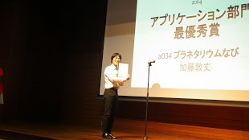 |
優秀賞（賞金額 10万円）
| エントリー番号 | a001 |
| 作品名称 |
AEDオープンデータプラットフォーム
|
| 受賞者 |
初音玲
|
| 審査員のコメント |
日本全国のAED位置情報を検索できるAPIを提供する社会的意義のある作品です。今後も未公開の自治体のAED情報が追加され、オープンデータによる人命救護支援が広がっていくことを期待しています。
|
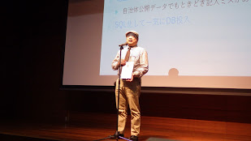 |
[データセット部門]
最優秀賞 （賞金額15万円）
| エントリー番号 | d001 |
| 作品名称 |
京都が出てくる本のデータ
|
| 受賞者 |
是住久美子
|
| 審査員のコメント | 本に関するオープンデータを、司書ならでは、本の持つ京都度合いや与える印象という専門知識および、京都の地図データとリンクする事で、価値あるデータに昇華して、世界にリリースしている点を高く評価しました。このデータを通じて、本と京都に纏わる事柄に興味を持ち、ユーザ体験を向上させる事に繋がると思います。本チャレンジを通じ、一人でも多くの方に利用されることに繋がれば幸いです。 | 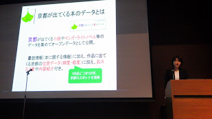 |
優秀賞（賞金額 10万円）
| エントリー番号 | d070 |
| 作品名称 |
When.exe Ruby版による日本暦注データセット
|
| 受賞者 |
須賀 隆
|
| 審査員のコメント |
古今東西、様々な方法で表されてきた「暦」という概念について、LODとしてユニークに名前付けして統一的に扱うための整理を進められている点を高く評価しました。受賞者が開発するWhen.exe（rubyライブラリ）を最大限活用することで、今回の受賞作である日本暦注（方位などの吉凶や禁忌に関する情報）のみならず、世界各国の暦法・暦注を網羅した基盤的なLODデータセットへの発展に期待します。
|
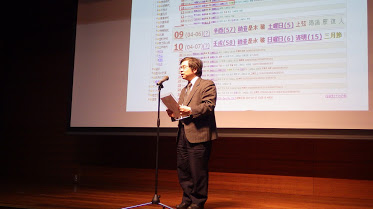 |
[アイデア部門]
最優秀賞 （賞金額10万円）
| エントリー番号 | i035 |
| 作品名称 |
ウィキ町史
|
| 受賞者 |
山形巧哉・山口琢
|
| 審査員のコメント |
ウィキペディアタウンの成果が蓄積され、記事数等が増えてくると、必然的に「自分の町用の索引」が必要になります。その際、単にカテゴリ索引を作るのではなく「町史」として年表型とすることで、索引でもあり、またそれ自体が「地域をひもとく」魅力的なコンテンツにもなる点に工夫があります。さらに時間や出来事をハブとして、自分の町と他の町の「ウィキ町史」をリンクし横串表示する等により、さらなる二次活用も視野に入れている点も評価しました。
|
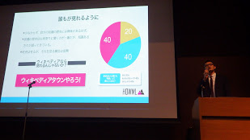 |
優秀賞（賞金額 7万円）
| エントリー番号 | i015 |
| 作品名称 |
農業生産物の選択の幅を広げるノーバ（農場）～日本の農業を魅力あるものにするIT利活用～
|
| 受賞者 |
庄司昌彦
|
| 審査員のコメント | ワン・ツー・ワン・マーケティングなど、企業と顧客を結び付ける手法はＩＣＴ技術により発展してきました。ノーバはそれをさらに発展させ、生産者と消費者というレベルまで一般化しています。具体的に農業という場で、モノ・コトを品種という分解能で定義し直している点は画期的です。また、ＬＯＤベースのシステムが補完するバイヤのマッチング方式で、新たな流通網の提案がなされていることを高く評価しました。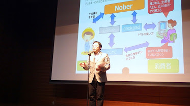 |
[ビジュアライゼーション部門]
最優秀賞 （賞金額10万円）
| エントリー番号 | v011 |
| 作品名称 |
にたものみっけ
|
| 受賞者 |
D.Yamashita、 murasaki、 H.Chiba
|
| 審査員のコメント |
シンプルなコンセプトと、スマホやタブレットにも対応できそうな簡単なUIが魅力的です。これを使っていると、分野を横断してもっと様々なデータを試したくなります。データ提供者、アプリ開発者、アプリ利用者それぞれにインパクトのある作品です。子供の頃にデータの関連性を自分で見つけ出す体験をすることが、データを入手して可視化できることが当たり前の社会へとつながるでしょう。
|
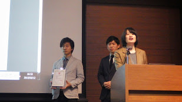 |
優秀賞（賞金額 5万円）
| エントリー番号 | v013 |
| 作品名称 |
大阪市の警察署・交番と犯罪発生地点の重ね合わせ
|
| 受賞者 |
上田洋,佐藤麻耶
|
| 審査員のコメント |
過去の受賞作品のアプリ等を普遍化する手法を活用し、公開データから作成した警察署・交番の位置を地図上にプロットし前記施設のないエリアを可視化、そこに別の犯罪発生地域データを手打ちでマッシュアップをして、両者の関係を大変わかり易く表現したことを評価しました。上記テーマに限らず、原因と結果を可視化するケースで幅広く援用できるであろう手法の普遍性についても高く評価しました。
|
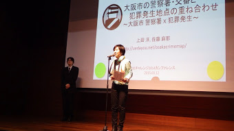 |
[基盤技術部門]
最優秀賞 （賞金額15万円）※賞金については受賞者がご辞退されています
| エントリー番号 | b008 |
| 作品名称 |
GeoNames.jp
|
| 受賞者 |
インディゴ株式会社 ラボチーム
|
| 審査員のコメント |
様々なデータからリンクできる、日本語LODの基盤としての重要な役割を担うデータセットです。地理空間情報を、緯度・経度といった数値データではなく、日本語の地名を元にした一意のURIとして表すことで、多くのデータと「つながる」ことが期待されます。ぜひ、継続的なメンテナンスと利用促進を進め、日本語LODクラウドの大きなハブとして発展させてください。
|
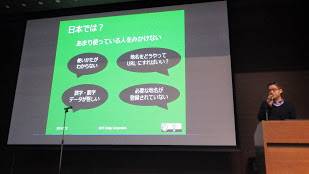 |
優秀賞（賞金額 10万円）
| エントリー番号 | b001 |
| 作品名称 |
SPARQL Creator
|
| 受賞者 |
藤本椋也, 年岡晃一
|
| 審査員のコメント |
LODに関連するアプリケーションを開発するさいにSPARQLを使いこなせると有益であるが、適切なSPARQLクエリを構築することは容易ではありません。特に第三者により構築されているデータの場合はなおさらです。本技術はこの問題に対する一つの解決策であり、有用なアプリケーション開発の推進役となるべく重要な基盤技術といえます。利用者からの提案を反映させるなど引き続き機能向上と安定した運用を期待します。
|
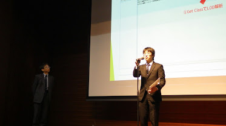 |
■ Platinumスポンサー賞
LOD for サイエンス賞 [富士通株式会社]（賞金額5万円）
| エントリー番号 | d026 |
| 作品名称 |
全菌類のデータベース「大菌輪」LOD（識別形質）
|
| 受賞者 |
中島淳志
|
| プレゼンター |
株式会社富士通研究所ナレッジプラットフォーム研究部部長 湯上伸弘様
|
| スポンサーコメント |
本データセットは、学術情報へのアクセシビリティを高めるだけでなく、個々の論文に散らばる知識の断片を「つなげ」たものであり、まさしく菌類の全貌の把握に有益である。また、本家「大菌輪」プロジェクトも秀逸である一方、積極的にLODとしてデータ公開し、将来の技術革新を目指す姿勢を高く評価した。
|
 |
日本マイクロソフト賞 [日本マイクロソフト株式会社] （賞金額5万円）
| エントリー番号 | a001 |
| 作品名称 |
AEDオープンデータプラットフォーム
|
| 受賞者 |
初音玲
|
| プレゼンター |
デベロッパーエクスペリエンス＆エバンジェリズム統括本部エマージングテクノロジー推進部部長 砂金信一郎様
|
| スポンサーコメント |
自治体が管理しているAEDの設置情報データを粘り強く交渉して提供してもらい、オープンデータ化するだけでなく、アプリケーションとしても提供し、AEDの利用普及に貢献している点を評価しました。
|
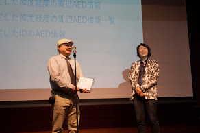 |
朝日新聞賞 [朝日新聞社] （賞金額5万円）
| エントリー番号 | a023 |
| 作品名称 |
ご当地なび「防災情報」
|
| 受賞者 |
京都フラワーツーリズム
|
| プレゼンター |
株式会社朝日新聞社ブランド推進本部マーケティング部次長 中村啓一様
|
| スポンサーコメント |
いざという時しか使わない「防災情報」を、観光や地域情報のアプリに組みこむことで、利用可能性を高めた。自治体のオープンデータと市民や民間のデータを組み合わせ、社会課題を身近で現実的な形で解決している。避難所情報の詳細をビジュアル表現や入り口の明示で分かりやすくする工夫も見られた。公開データの利用促進なども配慮しており、他分野・地域への広がりも期待したい。
|
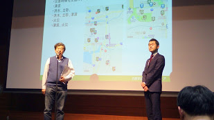 |
LinkData賞 [一般社団法人リンクデータ] （賞金額5万円）
| エントリー番号 | d061 |
| 作品名称 |
ウェルカム玄海町動画マッピング
|
| 受賞者 |
宮﨑伸市
|
| プレゼンター |
一般社団法人リンクデータ代表理事 豊田哲郎様
|
| スポンサーコメント |
佐賀インターネット放送局の美しい映像で玄海町の魅力を伝えており、その映像コンテンツへのリンク情報をオープンデータにすることで、観光アプリなどの自由な創作活動を多くの人に提供されている点を評価しました。動画マッピングの見本となる、高いクオリティのコンテンツを提供されており、多くの動画マッピング講習会で事例紹介にも使われるなど、コンテンツとしての影響力も高く評価されました。
|
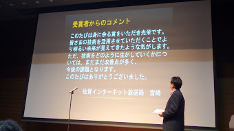 |
■審査員特別賞
公共LOD賞（賞金額5万円）
| エントリー番号 | d036 |
| 作品名称 |
阪神・淡路大震災「1.17の記録」
|
| 受賞者 |
神戸市広報課
|
| 審査員のコメント |
震災の経験や教訓を風化させることなく後世に伝えるために、画像データは生々しい情報を伝えることができる有効なデータです。本データセットは阪神・淡路大震災の発災直後および復興の様子、約1,000枚の記録写真を画像データとして公開しています。近年、防災・減災への関心が高まる中で、イベント開催やアプリケーション開発など、多様な場面における本データセットの活用が期待できます。
|
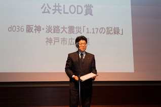 |
学生奨励賞（高校部門） （賞金額5万円）
| エントリー番号 | i047 |
| 作品名称 |
日本全国投票率向上アプリ「A-Senkyo」 Linked Open Data
|
| 受賞者 |
Team inflatier（猪野 湧斗、川上 拓真、舛村 康成）
|
| 審査員のコメント |
投票率の低下という社会課題に対し、実際にデータを収集しアプリケーションを作って解決方法を提案するという行動力、さらにはこの仕組みを利用してデータの標準化と各地域への横展開を目指すという広い視点が素晴らしいです。特筆すべきは選挙権を持たない高校生の方々の提案であるという点で、これで大人が動かなかったら恥と思わせるほどです。今後是非たくさんの人を巻き込んで活動を続けて行って頂きたいと思います。
|
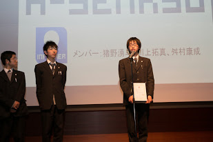 |
学生奨励賞（高専部門） （賞金額5万円）
| エントリー番号 | d036 |
| 作品名称 |
街灯これくしょん
|
| 受賞者 |
松田 裕貴，玉井 雄一郎，新井イスマイル
|
| 審査員のコメント |
カリキュラム、学生食堂という学校の身近なデータから学校外へ踏み出した作品です。街灯への着目も新鮮であり、実際に使用してみると街灯認識精度の高さにも驚きました。また、オープンデータを誰が提供するのかという大きな課題に対しても、市民自身が自分達のために楽しくデータを集めるという提案となっております。豊かな発想力と技術力で本コンセプト、アイデアの多くのバリエーションが今後も生み出されることを期待します。
|
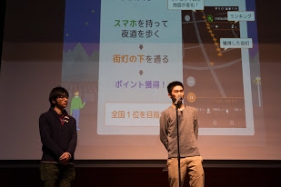 |
学生奨励賞（大学部門） （賞金額5万円）
| エントリー番号 | a018 |
| 作品名称 |
MusicSPARQL
|
| 受賞者 |
岡本将貴、藤井章博
|
| 審査員のコメント |
若者らしい興味対象でアプリケーションを制作、完成させたところに好感を持ちました。マッシュアップが異なる音源からトラックの一部をそれぞれ取り出してミックスし、一つの曲にする音楽の手法であったところから転じて、WebプログラミングにおけるAPIの活用と制作方法となっていったことからも、MusicSPARQLがLODにおけるマッシュアップ音楽のような存在となりうる可能性も感じられます。今後の発展を期待します。
|
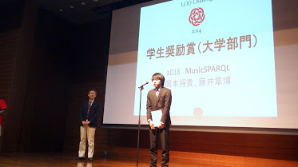 |
チャレンジデー賞 （賞金額5万円）
| エントリー番号 | d045 |
| 作品名称 |
名古屋駅地下街店舗LOD
|
| 受賞者 |
一円真治，白松俊，野原健美
|
| 審査員のコメント |
ハッカソンの作業で、各店舗の基本情報や飲食店のメニューの詳細情報が収集されています。このことがチャレンジデー賞受賞のキーになりました。ＬＯＤ形式のＤＢになっており、SPARQLエンドポイント経由で簡単に検索、取得ができます。また、車椅子使用可否情報が属性としてあり、近未来の福祉社会の情報のあり方を示しています。今後ハッカソン等で様々なアプリが作成されることが期待できるデータセットだと思い高く評価しました。
|
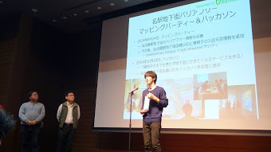 |
チャレンジデー賞 （賞金額5万円）
| エントリー番号 | a065 |
| 作品名称 |
Perfect Women
|
| 受賞者 |
Himi’s
|
| 審査員のコメント |
LOD活用基盤サイトLOD4ALLを利活用して、お肌の悩みを解決しようという新しい課題に取り組んだ作品です。自分の肌質やアレルギー、知りたい商品カテゴリーを入力すると、自分に合ったスキンケア商品を表示してくれます。本作品をきっかけとして、多くの商品データがLOD化され、様々な視点での作品が創出されることを期待します。
|
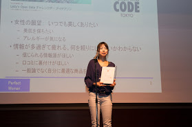 |
LOD推進賞 （賞金額5万円）
| エントリー番号 | d007 |
| 作品名称 |
伝統的工芸品/Traditional Crafts of Japan
|
| 受賞者 |
中山 圭太郎
|
| 審査員のコメント |
伝統的工芸品産業支援補助金の助成対象となる工芸品のリストをオープンデータ化することで、コンサルテーション活動のきっかけを創りだすビジネスモデルを展開されている点を評価しました。自分の専門知識をオープンデータにすることで、個人のブランド形成と、企業コンサルのチャンスを広げていく手法は、今後、全国の個人コンサルタントにも大きな影響を与えていくものと期待されます。
|
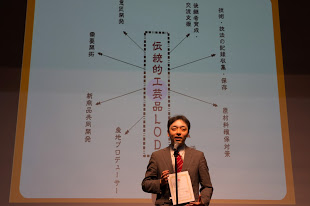 |
ビジュアライズ基盤賞 （賞金額5万円）
| エントリー番号 | b005 |
| 作品名称 |
E2D3 ver. 0.3 （Excel to D3）
|
| 受賞者 |
E2D3 ver. 0.3 開発チーム
|
| 審査員のコメント |
オープンデータの活用に限らず、データを処理した結果をどの様に見せるかというビジュアライゼーション(可視化)技術はとても重要です。高機能な可視化ライブラリであるD3をExcelから呼び出せるようにした本作品の応用分野・活用事例は数限りなくあります。基盤技術部門では、その汎用性の高さから惜しくも入賞とならなかったのですが「ビジュアライズ基盤賞」として表彰して、様々な分野で利活用されることを期待します。
|
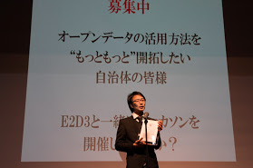 |
サスティナブル賞 （賞金額5万円）
| エントリー番号 | i010 |
| 作品名称 |
駅のバリアフリールート検索（通勤情報を可視化することによる通勤問題解決2014）
|
| 受賞者 |
オープンデータで通勤問題解決プロジェクト（仮称）
|
| 審査員のコメント |
昨年の活動を今年も継続して実施しながら、新たな課題を発見しアイデアを生み出した作品であり、アイデアだけでなく、アプリをも構築している点を高く評価しました。２年間活動を継続されているチームワークの素晴らしさに敬意を表するとともに、今後も活動を継続され、さらなる発展を続けていかれることを期待します。
|
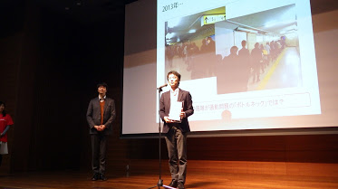 |
＊本件連絡先
LODチャレンジ実行委員会 事務局
〒252-0882 神奈川県藤沢市遠藤5322
慶應義塾大学環境情報学部 萩野研究室内
LODチャレンジJapan2014 受賞作品発表
LODチャレンジ Japan 2014 受賞作品が決定しました。
受賞者の皆様 おめでとうございます！！
授賞式、受賞作品デモ展示は「LODチャレンジ2014カンファレンス＆優秀作品発表会 ~オープンデータの未来~」で行います。
日時：2015年3月12日(木) 12:30－17:30 (受付開始 12:00)
会場：慶應義塾大学 三田キャンパス 南校舎5階 南校舎ホール (キャンパスマップ[6])
詳細と参加申し込み：LODチャレンジ2014カンファレンス＆優秀作品発表会 ~オープンデータの未来~
＜受賞者の皆様へ＞
受賞者の皆様に実行委員会事務局より受賞の連絡を行っております。連絡が届いていない場合は、お手数をお掛けしますが、事務局 lod-challenge[at]sfc.keio.ac.jp までご確認をお願いします（メールアドレスの[at]を@としてお送り下さい）。
－－－－－－－－－－－－－－－－
LODチャレンジ Japan 2014 受賞作品
■ 部門賞
[アプリケーション部門]
最優秀賞（賞金20万円）
| 作品番号 | 作品名 | 応募者名 |
| a034 | プラネタリウムなび | 加藤敦丈 |
優秀賞（賞金10万円）
| 作品番号 | 作品名 | 応募者名 |
| a001 | AEDオープンデータプラットフォーム | 初音玲 |
[データセット部門]
最優秀賞（賞金15万円）
| 作品番号 | 作品名 | 応募者名 |
| d001 | 京都が出てくる本のデータ | 是住久美子 |
優秀賞（賞金10万円）
| 作品番号 | 作品名 | 応募者名 |
| d070 | When.exe Ruby版による日本暦注データセット | 須賀 隆 |
[アイディア部門]
最優秀賞（賞金10万円）
| 作品番号 | 作品名 | 応募者名 |
| i035 | ウィキ町史 | 山形巧哉・山口琢 |
優秀賞（賞金7万円）
| 作品番号 | 作品名 | 応募者名 |
| i015 | 農業生産物の選択の幅を広げるノーバ（農場）～日本の農業を魅力あるものにするIT利活用～ | 庄司昌彦 |
[ビジュアライゼーション部門]
最優秀賞（賞金10万円）
| 作品番号 | 作品名 | 応募者名 |
| v011 | にたものみっけ | D.Yamashita、 murasaki、 H.Chiba |
優秀賞（賞金7万円）
| 作品番号 | 作品名 | 応募者名 |
| v013 | 大阪市の警察署・交番と犯罪発生地点の重ね合わせ | 上田洋,佐藤麻耶 |
[基盤技術部門]
最優秀賞（賞金15万円）
※賞金については受賞者がご辞退されています
| 作品番号 | 作品名 | 応募者名 |
| b008 | GeoNames.jp | インディゴ株式会社 ラボチーム |
優秀賞（賞金10万円）
| 作品番号 | 作品名 | 応募者名 |
| b001 | SPARQL Creator | 藤本椋也, 年岡晃一 |
■ 審査員特別賞
公共LOD賞（賞金5万円）
| 作品番号 | 作品名 | 応募者名 |
| d036 | 阪神・淡路大震災「1.17の記録」 | 神戸市広報課 |
学生奨励賞（高校部門）（賞金5万円）
| 作品番号 | 作品名 | 応募者名 |
| i047 | 日本全国投票率向上アプリ「A-Senkyo」 | Team inflatier(猪野 湧斗、川上 拓真、舛村 康成) |
学生奨励賞（高専部門）（賞金5万円）
| 作品番号 | 作品名 | 応募者名 |
| b017 | 街灯これくしょん | 松田 裕貴，玉井 雄一郎，新井イスマイル |
学生奨励賞（大学部門）（賞金5万円）
| 作品番号 | 作品名 | 応募者名 |
| a018 | MusicSPARQL | 岡本将貴、藤井章博 |
チャレンジデー賞（賞金5万円）
| 作品番号 | 作品名 | 応募者名 |
| d045 | 名古屋駅地下街店舗LOD | 一円真治，白松俊，野原健美 |
チャレンジデー賞（賞金5万円）
| 作品番号 | 作品名 | 応募者名 |
| a065 | Perfect Women | Himi’s |
LOD推進賞（賞金5万円）
| 作品番号 | 作品名 | 応募者名 |
| d007 | 伝統的工芸品/Traditional Crafts of Japan | 中山 圭太郎 |
ビジュアライズ基盤賞（賞金5万円）
| 作品番号 | 作品名 | 応募者名 |
| b005 | E2D3 ver. 0.3 （Excel to D3） | E2D3 ver. 0.3 開発チーム |
サスティナブル賞（賞金5万円）
| 作品番号 | 作品名 | 応募者名 |
| i010 | 駅のバリアフリールート検索（通勤情報を可視化することによる通勤問題解決2014） | オープンデータで通勤問題解決プロジェクト（仮称） |
■ スポンサー賞
朝日新聞賞（賞金5万円）
| 作品番号 | 作品名 | 応募者名 |
| a023 | ご当地なび「防災情報」 | 京都フラワーツーリズム |
日本マイクロソフト賞（賞金5万円）
| 作品番号 | 作品名 | 応募者名 |
| a001 | AEDオープンデータプラットフォーム | 初音玲 |
LOD for サイエンス賞(富士通株式会社)（賞金5万円）
| 作品番号 | 作品名 | 応募者名 |
| d026 | 全菌類のデータベース「大菌輪」LOD（識別形質） | 中島淳志 |
LinkData賞（賞金5万円）
| 作品番号 | 作品名 | 応募者名 |
| d061 | ウェルカム玄海町動画マッピング | 宮﨑伸市 |
＊本件連絡先
LODチャレンジ実行委員会 事務局
〒252-0882 神奈川県藤沢市遠藤5322
慶應義塾大学環境情報学部 萩野研究室内
lod-challenge@sfc.keio.ac.jp